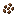
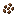

Minecraft's forests are common biomes full of important resources, farmable mobs, and beautiful scenery. Many of these biomes contain unique tree types, special crops, and rare structures that make them worth exploring.
BIRCH FORESTS
Love it or hate it
CHERRY GROVE
Pretty in pink

DARK FOREST
Dark and dangerous
FLOWER FOREST
Bees?
FOREST
The classic
JUNGLES
Full of life

TAIGAS
Source of spruce
WOODED BADLANDS
Dry and sparse
BIRCH FORESTS

DESCRIPTION:
The foliage in birch forests biomes (Birch Forests and Old Growth Birch Forests) is slightly desaturated and players have mixed opinions on the native wood type, but these biomes are undoubtedly rich in natural resources. The typical tree height is 7 blocks, but you may find 11 block tall trees in the Old Growth Birch Forests.
RESOURCES:
CHERRY GROVE
DESCRIPTION:
The prettiest, pinkest, and most recently added forest biome. While this biome isn't very diverse, the native wood and foliage are prized by builders. The cherry leaves are also considered 'flowers', which makes it quite attractive for bees and beekeepers alike.
RESOURCES:

DARK FOREST
DESCRIPTION:
Dark forests are very densely forested biomes filled with dark oak trees and giant red mushrooms. These are dangerous to explore in, but the rewards are great; They are the only biomes where woodland mansions generate, and they are dark enough in the daytime that hostile mobs may spawn.
RESOURCES:


FLOWER FOREST

DESCRIPTION:
Flower forests are very similar to the standard forest biome, but they have slightly less tree growth and significantly more flower growth. In this biome, almost every flower type can spawn, and the bee population is significantly higher. Plus, rabbits can spawn here!
RESOURCES:

FOREST
DESCRIPTION:
The simple forest biome is quite common, and is a good source of oak, birch, and livestock mobs. The dense foliage may be used as shelter by lingering hostile mobs, but isn't quite thick enough for them to spawn at daytime.
RESOURCES:
JUNGLES

DESCRIPTION:
Jungles are lush, brightly-coloured biomes that come in three varieties: the Sparse Jungle, the Bamboo Jungle, and regular Jungle. Jungle temples, parrots, ocelots, melons, and cocoa beans have a chance of spawning in all three, but the Bamboo Jungle is special, as both bamboo and pandas spawn there too.
RESOURCES:

 


TAIGAS
DESCRIPTION:
Taiga biomes are cold biomes populated with spruce trees, sweet berry bushes, and a few other uncommon natural blocks like podzol. There are two variants, the Snowy Taiga and the Old Growth Taiga. The latter is notable due to its massive, 2x2 spruce trees.
RESOURCES:


WOODED BADLANDS
DESCRIPTION:
Wooded Badlands, previously referred to as the Mesa Forest Plateau, are sparse, oak-oly forests topping the hills of badlands biomes. These are rare, but their extreme arid environment gives them a very pleasing block palette.
RESOURCES:

STRUCTURES
Trail Ruins are structures that spawn partially underground in Taigas, Jungles, and Birch Forests. They are made of coloured terracotta blocks and mud bricks, and are covered in suspicious sand, gravel, and dirt that have a chance of dropping items when brushed. These possible item drops include dyes, pottery sherds, armour trims, and other miscellaneous items.
Woodland Mansions are 3-storey tall structures containing procedurally generated rooms. These rooms contain unique (and sometimes random loot) as well as naturally-spawning Illagers and Allays. These are similar to Nether Fortresses, in that you must fight for your treasure.
Jungle Pyramids are small structures spawning in Jungles and Bamboo Jungles, which contain traps on the lower level. Beyond these traps (including a lever combination lock and a tripwire boobytrap) you will find a chest full of ores, horse armour, and other loot.
PLANTS
TREES
The one thing that every forest biome has in common is: trees! There are nine types of trees in Minecraft, with six (oak, birch, spruce, cherry, jungle, and dark oak) being native to forest biomes.
FLOWERS
Nearly every kind of flower can be found in Minecraft's forest biomes. They are most abundant and varied in flower forests, but each biome contains its own selection of flowers. In the plain Forest biome, one can find roses, lilacs, peonies, and lilies of the valley.
HARVESTABLES
Taiga biomes and Jungle biomes contain many farmable plants, like cocoa, bamboo, pumpkins, and sweet berries. While most of these forest crops aren't too valuable on their own, they can all be used to craft important blocks and food items, as well as be used for decorating builds.
MOBS
PASSIVE MOBS
The vast majority of forest mobs are passive (will never become aggressive). All of the typical "farm" animals spawn in these biomes, but some less traditional ones (rabbits, foxes, and ocelots) are also native.
NEUTRAL MOBS
Neutral mobs are passive until they are hurt by a player. The only neutral mobs that spawn in forests are bees, pandas, and wolves (also a tameable mob).
TAMEABLE MOBS
While most forest animals can become "trusting" of players, only a few can be truly tamed. This includes wolves and parrots, who can be made to sit down and stand up once tamed. Wolves spawn in Taigas and Forests, while parrots spawn exclusively in Jungles.